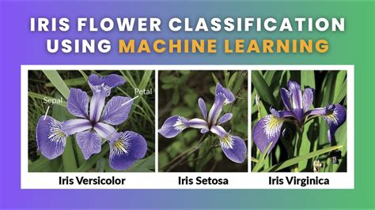
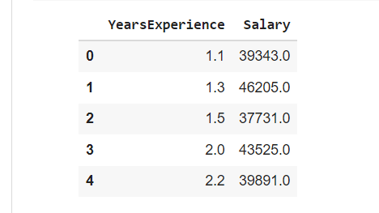

My Projects
-
Precision Agriculture
Precision agriculture is a cutting-edge field that leverages data analytics to optimize farming practices. This project involves analyzing a range of agricultural data points such as soil pH, temperature, humidity, rainfall, and NPK (Nitrogen, Phosphorus, Potassium) levels to provide actionable insights for farmers. The aim is to help farmers make data-driven decisions that enhance crop yield, reduce costs, and increase sustainability. By using machine learning models, the system can predict optimal planting times, detect nutrient deficiencies, and recommend tailored solutions for irrigation and fertilization. Additionally, this project allows for real-time monitoring of agricultural fields, empowering farmers to adjust practices as needed based on environmental changes. By integrating weather data, soil conditions, and crop performance metrics, precision agriculture not only improves efficiency but also contributes to more sustainable agricultural practices.
-
Flower Classification Web Application
The Flower Classification Web Application project is built using machine learning to predict the species of flowers based on specific physical attributes, such as sepal and petal length and width. The application utilizes the famous Iris dataset, which consists of measurements from three different species of Iris flowers. This dataset is a classic example used in machine learning to demonstrate classification techniques. By training a machine learning model (typically a decision tree, k-nearest neighbors, or support vector machine), the application is able to classify new flower samples into one of the three species. The key advantage of this project is that it not only provides a practical example of supervised learning but also emphasizes the importance of feature engineering and model evaluation. The web-based interface allows users to upload flower measurements and get species predictions in real time, showcasing the practical use of machine learning in botany and agriculture. 
-
Salary Prediction Model
The Salary Prediction Model is a data-driven project that aims to predict an individual's salary based on a set of factors, including age, gender, education level, job title, and years of experience. By using machine learning algorithms such as linear regression, random forests, or gradient boosting, the model is trained on historical salary data to make predictions for new individuals. This model provides valuable insights into the dynamics of salary determination across different industries and roles. It helps employers and employees alike to understand salary trends and expectations based on specific variables. The primary objective of the project is to empower job seekers and professionals with predictive tools that guide their career decisions, negotiations, and expectations. Furthermore, it offers businesses a way to streamline their compensation strategies and ensure that salary offers are competitive with market standards. 